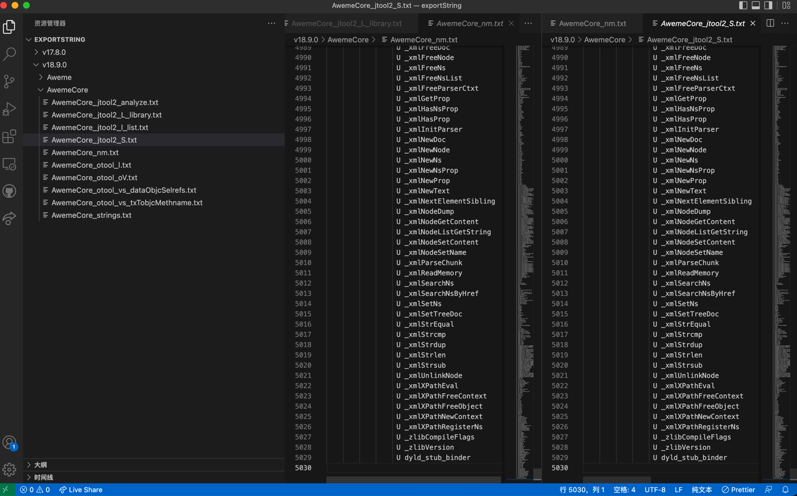

jtool2用法举例：AwemeCore
-h：查看header头信息
➜ AwemeCore jtool2 -h v18.9.0/Payload/Aweme.app/Frameworks/AwemeCore.framework/AwemeCore
Magic: 64-bit MachO (Little Endian)
Type: dylib
CPU: ARM64 (ARMv8)
Cmds: 133
Size: 18720
Flags: 0x910085
-l: list列出段
jtool2 -l v18.9.0/Payload/Aweme.app/Frameworks/AwemeCore.framework/AwemeCore
输出内容：
➜ AwemeCore jtool2 -l ../../../../已脱壳/v18.9.0/Payload/Aweme.app/Frameworks/AwemeCore.framework/AwemeCore
LC 00: LC_SEGMENT_64 Mem: 0x000000000-0x304000 __TEXT
Mem: 0x00000b9b0-0x000013e70 __TEXT.__stub_helper (Normal)
Mem: 0x000013e70-0x000017e90 __TEXT.__const
Mem: 0x000017e90-0x00001ad88 __TEXT.__swift5_typeref
Mem: 0x00001ad88-0x00001d710 __TEXT.__swift5_fieldmd
Mem: 0x00001d710-0x00001da48 __TEXT.__swift5_proto
Mem: 0x00001da48-0x00001dcd4 __TEXT.__swift5_types
Mem: 0x00001dcd4-0x00001dcd4 __TEXT.__cstring (C-String Literals)
Mem: 0x00001dcd4-0x00001dcd4 __TEXT.__objc_methname (C-String Literals)
Mem: 0x00001dcd4-0x00001dcd4 __TEXT.__objc_classname (C-String Literals)
Mem: 0x00001dcd4-0x00001dcd4 __TEXT.__objc_methtype (C-String Literals)
Mem: 0x00001dcd4-0x00001dd3c __TEXT.__gcc_except_tab
Mem: 0x00001dd40-0x00002136c __TEXT.__swift5_reflstr
Mem: 0x00002136c-0x000021524 __TEXT.__swift5_builtin
Mem: 0x000021524-0x0000217dc __TEXT.__swift5_assocty
Mem: 0x0000217dc-0x0000233e8 __TEXT.__swift5_capture
Mem: 0x0000233e8-0x000023448 __TEXT.__swift5_protos
Mem: 0x000023448-0x000023448 __TEXT.__ustring
Mem: 0x000023448-0x000023448 __TEXT.__text
Mem: 0x000023448-0x0002c7fb8 __TEXT.__unwind_info
Mem: 0x0002c7fb8-0x0002ffff8 __TEXT.__eh_frame
Mem: 0x000300000-0x00030001b __TEXT.__oslogstring (C-String Literals)
LC 01: LC_SEGMENT_64 Mem: 0x000304000-0x5924000 __DATA
Mem: 0x000304000-0x000307120 __DATA.__got (Non-Lazy Symbol Ptrs)
Mem: 0x000307120-0x00030c9d0 __DATA.__la_symbol_ptr (Lazy Symbol Ptrs)
Mem: 0x00030c9d0-0x0003106f8 __DATA.__mod_init_func (Module Init Function Ptrs)
Mem: 0x000310700-0x000321768 __DATA.__const
Mem: 0x000321768-0x0003221c8 __DATA.__cfstring
Mem: 0x0003221c8-0x000369bd0 __DATA.__objc_classlist (Normal)
Mem: 0x000369bd0-0x00036a248 __DATA.__objc_nlclslist (Normal)
Mem: 0x00036a248-0x00036da38 __DATA.__objc_catlist (Normal)
Mem: 0x00036da38-0x00036db58 __DATA.__objc_nlcatlist (Normal)
Mem: 0x00036db58-0x00037f650 __DATA.__objc_protolist
Mem: 0x00037f650-0x00037f658 __DATA.__objc_imageinfo
Mem: 0x00037f658-0x0009417a0 __DATA.__objc_const
Mem: 0x0009417a0-0x0009417a8 __DATA.__objc_selrefs (Literal Pointers)
Mem: 0x0009417a8-0x000947ea8 __DATA.__objc_protorefs
Mem: 0x000947ea8-0x0009881f8 __DATA.__objc_classrefs (Normal)
Mem: 0x0009881f8-0x0009ab740 __DATA.__objc_superrefs (Normal)
Mem: 0x0009ab740-0x0009acac8 __DATA.__objc_ivar
Mem: 0x0009acac8-0x000d55b20 __DATA.__objc_data
Mem: 0x000d55b20-0x000d5aa30 __DATA.__data
Mem: 0x000d5aa30-0x000d5ab28 __DATA.__HTSLifeCycle
Mem: 0x000d5ab28-0x000d5ab40 __DATA.__objc_stublist
Mem: 0x000d5ab40-0x000d5ab58 __DATA.RewardedADJSB
Mem: 0x000d5ab58-0x000d5ad20 __DATA.HGTimorLaunch
Mem: 0x000d5ad20-0x000d5ad88 __DATA.HGTimorLoad
Mem: 0x000d5ad88-0x000d5b080 __DATA.TimorLaunch
Mem: 0x000d5b080-0x000d5b140 __DATA.TimorLoad
Mem: 0x000d5b140-0x000d5b230 __DATA.RSDHCampaign
Mem: 0x000d5b230-0x000d5b4b0 __DATA.XBMExternal
Mem: 0x000d5b4b0-0x000d5b570 __DATA.LazyRegHeader
Mem: 0x000d5b570-0x000d5b580 __DATA.AWELynxBridge
Mem: 0x000d5b580-0x000d5b5b0 __DATA.PremainCode
Mem: 0x000d5b5b0-0x000d60510 __DATA.LazyRegData
Mem: 0x000d60510-0x000d61390 __DATA.__GAIA__SECTION
Mem: 0x000d61390-0x000d614b0 __DATA.XBMDefault
Mem: 0x000d614b0-0x000d61578 __DATA.HMDModule
Mem: 0x000d61578-0x000d61590 __DATA.HMDLocalModule
Mem: 0x000d61590-0x000d61710 __DATA.IESLiveBridge
Mem: 0x000d61710-0x000d62138 __DATA.__bd_timsdk
Mem: 0x000d62138-0x000d62228 __DATA.IESLiveTemplate
Mem: 0x000d62228-0x000d62308 __DATA.__LIVESEI__
Mem: 0x000d62308-0x000d62668 __DATA.__LIVESCHEMA__
Mem: 0x000d62668-0x000d626c8 __DATA.__LSCHEMEMODEL__
Mem: 0x000d626c8-0x000d626d8 __DATA.__ENTERROOMSEC__
Mem: 0x000d626d8-0x000d627a8 __DATA.__VSUSERCARD__
Mem: 0x000d627a8-0x000d627f8 __DATA.__PUZZLEMETHOD__
Mem: 0x000d627f8-0x000d62808 __DATA.IESSLynxBridge
Mem: 0x000d62808-0x000d62858 __DATA.RxAnnotation
Mem: 0x000d62858-0x000d670a8 __DATA.__objc_clsrefs
Mem: 0x000d670a8-0x000d67768 __DATA.__thread_vars (TLV descriptors)
Mem: 0x000d67768-0x000d67a28 __DATA.IESECSettingReg
Mem: 0x000d67a28-0x000d67ae0 __DATA.__swift_hooks
Mem: 0x000d67ae0-0x000d67b98 __DATA.__swift51_hooks
Mem: 0x000d67b98-0x000d68208 __DATA.__HTSService
Mem: 0x000d68208-0x000d682f8 __DATA.__HTSDyServImpl
Mem: 0x000d682f8-0x000d68918 __DATA.__HTSMsgAsc
Mem: 0x000d68918-0x000d68d68 __DATA.AWERunModernFeed
Mem: 0x000d68d68-0x000d68f98 __DATA.AWERunShare
Mem: 0x000d68f98-0x000d69028 __DATA.__HTSDyServ
Mem: 0x000d69028-0x000d690a8 __DATA.__HTSMsg
Mem: 0x000d690a8-0x000d75100 __DATA.RxInjector
Mem: 0x000d75100-0x000d75218 __DATA.RxAppService
Mem: 0x000d75218-0x000d75248 __DATA.__HTSNoti
Mem: 0x000d75248-0x000d752c8 __DATA.AWERunShareSVC
Mem: 0x000d752c8-0x000d76c68 __DATA.StudioConfigMock
Mem: 0x000d76c68-0x000d76d28 __DATA.XBMInternal
Mem: 0x000d76d30-0x000d84267 __DATA.__cstring (C-String Literals)
Mem: 0x000d84267-0x000df3302 __DATA.__objc_methname (C-String Literals)
Mem: 0x000df3302-0x000e1100a __DATA.__objc_methtype (C-String Literals)
Mem: 0x000e1100a-0x000f4c006 __DATA.__objc_classname (C-String Literals)
Mem: 0x000f4c008-0x000f80848 __DATA.__thread_bss (Thread local zerofill)
Mem: 0x000f80860-0x001257840 __DATA._D_tconst (Zero Fill)
Mem: 0x001257840-0x00161ad98 __DATA._D_dconst (Zero Fill)
Mem: 0x00161c000-0x00173e5fc __DATA._D_ddata (Zero Fill)
Mem: 0x00173e600-0x001bd8100 __DATA._D_cfstring (Zero Fill)
Mem: 0x001bd8100-0x0037e8970 __DATA._D_objc_const (Zero Fill)
Mem: 0x0037e8970-0x003893854 __DATA._D_objc_ivar (Zero Fill)
Mem: 0x003893858-0x003a98d20 __DATA._D_objc_selrefs (Zero Fill)
Mem: 0x003a98d20-0x003f4eb10 __DATA._D_gcc_except_ta (Zero Fill)
Mem: 0x003f4eb10-0x0047e5193 __DATA._D_cstring (Zero Fill)
Mem: 0x0047e5194-0x00485caee __DATA._D_ustring (Zero Fill)
Mem: 0x00485caee-0x00533d1a8 __DATA._D_objc_methname (Zero Fill)
Mem: 0x00533d1a8-0x005507b0a __DATA._D_objc_methtype (Zero Fill)
Mem: 0x005507c00-0x005687848 __DATA.__common (Zero Fill)
Mem: 0x005687900-0x0059229ec __DATA.__bss (Zero Fill)
LC 02: LC_SEGMENT_64 Mem: 0x005924000-0x11480000 __BD_TEXT
Mem: 0x005924000-0x011476a38 __BD_TEXT.__text (Normal)
Mem: 0x011476a38-0x01147ef40 __BD_TEXT.__stubs (Symbol Stubs)
LC 03: LC_SEGMENT_64 Mem: 0x011480000-0x12660000 __LTC_DATA
Mem: 0x011480000-0x011480208 __LTC_DATA.__meta
Mem: 0x011480208-0x011480218 __LTC_DATA.__deco
Mem: 0x011480218-0x011b54d57 __LTC_DATA._C_objc_const
Mem: 0x011b54d57-0x011b6eadf __LTC_DATA._C_objc_ivar
Mem: 0x011b6eadf-0x0120f22de __LTC_DATA._C_cstring
Mem: 0x0120f22de-0x01232e92d __LTC_DATA._C_tconst
Mem: 0x01232e92d-0x01257b342 __LTC_DATA._C_gcc_except_ta
Mem: 0x01257b342-0x01265c5da __LTC_DATA.__fix
LC 04: LC_SEGMENT_64 Mem: 0x012660000-0x12f28000 __LINKEDIT
LC 05: LC_ID_DYLIB @rpath/AwemeCore.framework/AwemeCore
LC 06: LC_DYLD_INFO
Rebase info: 350072 bytes at offset 231473152 (0xdcc0000-0xdd15778)
Bind info: 292520 bytes at offset 231823224 (0xdd15778-0xdd5ce20)
Weak info: 296 bytes at offset 0xdd5ce20
Lazy info: 101024 bytes at offset 232116040 (0xdd5cf48-0xdd759e8)
Export info: 384 bytes at offset 232217064 (0xdd759e8-0xdd75b68)
LC 07: LC_SYMTAB
LC 08: LC_DYSYMTAB
1 local symbols at index 0
No external symbols
5029 undefined symbols at index 1
No TOC
No modtab
7248 Indirect symbols at offset 0xdfa63c0
LC 09: LC_UUID UUID: F1FCF15A-6465-31F0-9300-5BA1B8F91017
LC 10: LC_VERSION_MIN_IPHONEOS Minimum iOS version: 10.0.0
LC 11: LC_SOURCE_VERSION Source Version: 0.0.0.0.0
LC 12: LC_ENCRYPTION_INFO_64 Encryption: 0 from offset 32768 spanning 3112960 bytes
LC 13: LC_LOAD_DYLIB /usr/lib/libcompression.dylib
LC 14: LC_LOAD_DYLIB @rpath/BDLRepairer.framework/BDLRepairer
LC 15: LC_LOAD_DYLIB /usr/lib/libc++.1.dylib
LC 16: LC_LOAD_WEAK_DYLIB /System/Library/Frameworks/AdServices.framework/AdServices
LC 17: LC_LOAD_WEAK_DYLIB /System/Library/Frameworks/AppTrackingTransparency.framework/AppTrackingTransparency
LC 18: LC_LOAD_WEAK_DYLIB /System/Library/Frameworks/AuthenticationServices.framework/AuthenticationServices
LC 19: LC_LOAD_WEAK_DYLIB /System/Library/Frameworks/CoreHaptics.framework/CoreHaptics
LC 20: LC_LOAD_WEAK_DYLIB /System/Library/Frameworks/CoreTelephony.framework/CoreTelephony
LC 21: LC_LOAD_WEAK_DYLIB /System/Library/Frameworks/MetalKit.framework/MetalKit
LC 22: LC_LOAD_WEAK_DYLIB /System/Library/Frameworks/MetalPerformanceShaders.framework/MetalPerformanceShaders
LC 23: LC_LOAD_WEAK_DYLIB /System/Library/Frameworks/MetricKit.framework/MetricKit
LC 24: LC_LOAD_WEAK_DYLIB /System/Library/Frameworks/StoreKit.framework/StoreKit
LC 25: LC_LOAD_DYLIB @rpath/VolcEngineRTC.framework/VolcEngineRTC
LC 26: LC_LOAD_DYLIB @rpath/byteaudio.framework/byteaudio
LC 27: LC_LOAD_DYLIB /usr/lib/libbz2.1.0.dylib
LC 28: LC_LOAD_DYLIB /usr/lib/libc++abi.dylib
LC 29: LC_LOAD_DYLIB /usr/lib/libiconv.2.dylib
LC 30: LC_LOAD_DYLIB /usr/lib/libicucore.A.dylib
LC 31: LC_LOAD_DYLIB /usr/lib/liblzma.5.dylib
LC 32: LC_LOAD_DYLIB /usr/lib/libSystem.B.dylib
LC 33: LC_LOAD_DYLIB /usr/lib/libresolv.9.dylib
LC 34: LC_LOAD_DYLIB /usr/lib/libsqlite3.dylib
LC 35: LC_LOAD_DYLIB /usr/lib/libxml2.2.dylib
LC 36: LC_LOAD_DYLIB /usr/lib/libz.1.dylib
LC 37: LC_LOAD_WEAK_DYLIB /System/Library/Frameworks/ARKit.framework/ARKit
LC 38: LC_LOAD_DYLIB /System/Library/Frameworks/AVFoundation.framework/AVFoundation
LC 39: LC_LOAD_DYLIB /System/Library/Frameworks/AVKit.framework/AVKit
LC 40: LC_LOAD_DYLIB /System/Library/Frameworks/Accelerate.framework/Accelerate
LC 41: LC_LOAD_DYLIB /System/Library/Frameworks/AdSupport.framework/AdSupport
LC 42: LC_LOAD_DYLIB /System/Library/Frameworks/AddressBook.framework/AddressBook
LC 43: LC_LOAD_DYLIB /System/Library/Frameworks/AssetsLibrary.framework/AssetsLibrary
LC 44: LC_LOAD_DYLIB /System/Library/Frameworks/AudioToolbox.framework/AudioToolbox
LC 45: LC_LOAD_DYLIB /System/Library/Frameworks/CFNetwork.framework/CFNetwork
LC 46: LC_LOAD_DYLIB /System/Library/Frameworks/Contacts.framework/Contacts
LC 47: LC_LOAD_DYLIB /System/Library/Frameworks/ContactsUI.framework/ContactsUI
LC 48: LC_LOAD_DYLIB /System/Library/Frameworks/CoreAudio.framework/CoreAudio
LC 49: LC_LOAD_DYLIB /System/Library/Frameworks/CoreAudioKit.framework/CoreAudioKit
LC 50: LC_LOAD_DYLIB /System/Library/Frameworks/CoreFoundation.framework/CoreFoundation
LC 51: LC_LOAD_DYLIB /System/Library/Frameworks/CoreGraphics.framework/CoreGraphics
LC 52: LC_LOAD_DYLIB /System/Library/Frameworks/CoreImage.framework/CoreImage
LC 53: LC_LOAD_DYLIB /System/Library/Frameworks/CoreLocation.framework/CoreLocation
LC 54: LC_LOAD_WEAK_DYLIB /System/Library/Frameworks/CoreML.framework/CoreML
LC 55: LC_LOAD_DYLIB /System/Library/Frameworks/CoreMedia.framework/CoreMedia
LC 56: LC_LOAD_DYLIB /System/Library/Frameworks/CoreMotion.framework/CoreMotion
LC 57: LC_LOAD_DYLIB /System/Library/Frameworks/MobileCoreServices.framework/MobileCoreServices
LC 58: LC_LOAD_DYLIB /System/Library/Frameworks/CoreSpotlight.framework/CoreSpotlight
LC 59: LC_LOAD_DYLIB /System/Library/Frameworks/CoreText.framework/CoreText
LC 60: LC_LOAD_DYLIB /System/Library/Frameworks/CoreVideo.framework/CoreVideo
LC 61: LC_LOAD_DYLIB /System/Library/Frameworks/EventKit.framework/EventKit
LC 62: LC_LOAD_DYLIB /System/Library/Frameworks/Foundation.framework/Foundation
LC 63: LC_LOAD_DYLIB /System/Library/Frameworks/GLKit.framework/GLKit
LC 64: LC_LOAD_DYLIB /System/Library/Frameworks/GameplayKit.framework/GameplayKit
LC 65: LC_LOAD_DYLIB /System/Library/Frameworks/IOKit.framework/Versions/A/IOKit
LC 66: LC_LOAD_DYLIB /System/Library/Frameworks/ImageIO.framework/ImageIO
LC 67: LC_LOAD_DYLIB /System/Library/Frameworks/Intents.framework/Intents
LC 68: LC_LOAD_DYLIB /System/Library/Frameworks/JavaScriptCore.framework/JavaScriptCore
LC 69: LC_LOAD_DYLIB /System/Library/Frameworks/LocalAuthentication.framework/LocalAuthentication
LC 70: LC_LOAD_DYLIB /System/Library/Frameworks/MapKit.framework/MapKit
LC 71: LC_LOAD_DYLIB /System/Library/Frameworks/MediaAccessibility.framework/MediaAccessibility
LC 72: LC_LOAD_DYLIB /System/Library/Frameworks/MediaPlayer.framework/MediaPlayer
LC 73: LC_LOAD_DYLIB /System/Library/Frameworks/MediaToolbox.framework/MediaToolbox
LC 74: LC_LOAD_DYLIB /System/Library/Frameworks/MessageUI.framework/MessageUI
LC 75: LC_LOAD_DYLIB /System/Library/Frameworks/Metal.framework/Metal
LC 76: LC_LOAD_DYLIB /System/Library/Frameworks/NetworkExtension.framework/NetworkExtension
LC 77: LC_LOAD_DYLIB /System/Library/Frameworks/OpenAL.framework/OpenAL
LC 78: LC_LOAD_DYLIB /System/Library/Frameworks/OpenGLES.framework/OpenGLES
LC 79: LC_LOAD_DYLIB /System/Library/Frameworks/Photos.framework/Photos
LC 80: LC_LOAD_WEAK_DYLIB /System/Library/Frameworks/PhotosUI.framework/PhotosUI
LC 81: LC_LOAD_DYLIB /System/Library/Frameworks/QuartzCore.framework/QuartzCore
LC 82: LC_LOAD_DYLIB /System/Library/Frameworks/ReplayKit.framework/ReplayKit
LC 83: LC_LOAD_DYLIB /System/Library/Frameworks/SafariServices.framework/SafariServices
LC 84: LC_LOAD_DYLIB /System/Library/Frameworks/Security.framework/Security
LC 85: LC_LOAD_DYLIB /System/Library/Frameworks/SystemConfiguration.framework/SystemConfiguration
LC 86: LC_LOAD_DYLIB /System/Library/Frameworks/UIKit.framework/UIKit
LC 87: LC_LOAD_DYLIB /System/Library/Frameworks/VideoToolbox.framework/VideoToolbox
LC 88: LC_LOAD_DYLIB /System/Library/Frameworks/WebKit.framework/WebKit
LC 89: LC_LOAD_DYLIB /System/Library/Frameworks/iAd.framework/iAd
LC 90: LC_LOAD_WEAK_DYLIB /System/Library/Frameworks/QuickLook.framework/QuickLook
LC 91: LC_LOAD_DYLIB /usr/lib/libobjc.A.dylib
LC 92: LC_LOAD_WEAK_DYLIB /System/Library/Frameworks/Combine.framework/Combine
LC 93: LC_LOAD_WEAK_DYLIB /System/Library/Frameworks/GroupActivities.framework/GroupActivities
LC 94: LC_LOAD_WEAK_DYLIB /System/Library/Frameworks/IOSurface.framework/IOSurface
LC 95: LC_LOAD_WEAK_DYLIB /System/Library/Frameworks/UserNotifications.framework/UserNotifications
LC 96: LC_LOAD_WEAK_DYLIB /System/Library/Frameworks/WidgetKit.framework/WidgetKit
LC 97: LC_LOAD_WEAK_DYLIB /usr/lib/swift/libswiftCoreMIDI.dylib
LC 98: LC_LOAD_WEAK_DYLIB /usr/lib/swift/libswiftDataDetection.dylib
LC 99: LC_LOAD_WEAK_DYLIB /usr/lib/swift/libswiftFileProvider.dylib
LC 100: LC_LOAD_WEAK_DYLIB /usr/lib/swift/libswiftUniformTypeIdentifiers.dylib
LC 101: LC_LOAD_WEAK_DYLIB /usr/lib/swift/libswiftWebKit.dylib
LC 102: LC_LOAD_WEAK_DYLIB /usr/lib/swift/libswift_Concurrency.dylib
LC 103: LC_LOAD_WEAK_DYLIB @rpath/libswiftAVFoundation.dylib
LC 104: LC_LOAD_DYLIB @rpath/libswiftCore.dylib
LC 105: LC_LOAD_WEAK_DYLIB @rpath/libswiftCoreAudio.dylib
LC 106: LC_LOAD_WEAK_DYLIB @rpath/libswiftCoreData.dylib
LC 107: LC_LOAD_WEAK_DYLIB @rpath/libswiftCoreFoundation.dylib
LC 108: LC_LOAD_DYLIB @rpath/libswiftCoreGraphics.dylib
LC 109: LC_LOAD_WEAK_DYLIB @rpath/libswiftCoreImage.dylib
LC 110: LC_LOAD_WEAK_DYLIB @rpath/libswiftCoreLocation.dylib
LC 111: LC_LOAD_WEAK_DYLIB @rpath/libswiftCoreMedia.dylib
LC 112: LC_LOAD_WEAK_DYLIB @rpath/libswiftDarwin.dylib
LC 113: LC_LOAD_DYLIB @rpath/libswiftDispatch.dylib
LC 114: LC_LOAD_DYLIB @rpath/libswiftFoundation.dylib
LC 115: LC_LOAD_WEAK_DYLIB @rpath/libswiftIntents.dylib
LC 116: LC_LOAD_WEAK_DYLIB @rpath/libswiftMapKit.dylib
LC 117: LC_LOAD_WEAK_DYLIB @rpath/libswiftMetal.dylib
LC 118: LC_LOAD_WEAK_DYLIB @rpath/libswiftNetwork.dylib
LC 119: LC_LOAD_DYLIB @rpath/libswiftObjectiveC.dylib
LC 120: LC_LOAD_WEAK_DYLIB @rpath/libswiftPhotos.dylib
LC 121: LC_LOAD_WEAK_DYLIB @rpath/libswiftQuartzCore.dylib
LC 122: LC_LOAD_DYLIB @rpath/libswiftUIKit.dylib
LC 123: LC_LOAD_WEAK_DYLIB @rpath/libswiftos.dylib
LC 124: LC_LOAD_WEAK_DYLIB @rpath/libswiftsimd.dylib
LC 125: LC_RPATH /usr/lib/swift
LC 126: LC_RPATH @executable_path/Frameworks
LC 127: LC_RPATH @loader_path/Frameworks
LC 128: LC_RPATH @executable_path/../../Frameworks
LC 129: LC_RPATH @executable_path/Frameworks
LC 130: LC_FUNCTION_STARTS Offset: 232217448, Size: 2214096 (0xdd75b68-0xdf92438)
LC 131: LC_DATA_IN_CODE Offset: 234431544, Size: 1320 (0xdf92438-0xdf92960)
LC 132: LC_CODE_SIGNATURE Offset: 234688704, Size: 5977904 (0xdfd10c0-0xe5847f0)
-L：查看使用了哪些共享库Library
jtool2 -L v18.9.0/Payload/Aweme.app/Frameworks/AwemeCore.framework/AwemeCore
输出内容：
➜ AwemeCore jtool2 -L ../../../../已脱壳/v18.9.0/Payload/Aweme.app/Frameworks/AwemeCore.framework/AwemeCore
Warning! Too many symbols! This can easily be fixed by J - tell him, please
../../../../已脱壳/v18.9.0/Payload/Aweme.app/Frameworks/AwemeCore.framework/AwemeCore:
/usr/lib/libcompression.dylib (compatibility version 1.0.0, current version 1.0.0)
@rpath/BDLRepairer.framework/BDLRepairer (compatibility version 1.0.0, current version 1.0.0)
/usr/lib/libc++.1.dylib (compatibility version 1.0.0, current version 1200.3.0)
/System/Library/Frameworks/AdServices.framework/AdServices (compatibility version 1.0.0, current version 1.0.0)
/System/Library/Frameworks/AppTrackingTransparency.framework/AppTrackingTransparency (compatibility version 1.0.0, current version 1.0.0)
/System/Library/Frameworks/AuthenticationServices.framework/AuthenticationServices (compatibility version 1.0.0, current version 612.1.27)
/System/Library/Frameworks/CoreHaptics.framework/CoreHaptics (compatibility version 1.0.0, current version 1.0.0)
/System/Library/Frameworks/CoreTelephony.framework/CoreTelephony (compatibility version 1.0.0, current version 0.0.0)
/System/Library/Frameworks/MetalKit.framework/MetalKit (compatibility version 1.0.0, current version 153.0.0)
/System/Library/Frameworks/MetalPerformanceShaders.framework/MetalPerformanceShaders (compatibility version 1.0.0, current version 125.0.31)
/System/Library/Frameworks/MetricKit.framework/MetricKit (compatibility version 1.0.0, current version 1.0.0)
/System/Library/Frameworks/StoreKit.framework/StoreKit (compatibility version 1.0.0, current version 1.0.0)
@rpath/VolcEngineRTC.framework/VolcEngineRTC (compatibility version 1.0.0, current version 323.0.0)
@rpath/byteaudio.framework/byteaudio (compatibility version 1.0.0, current version 1.0.1)
/usr/lib/libbz2.1.0.dylib (compatibility version 1.0.0, current version 1.0.8)
/usr/lib/libc++abi.dylib (compatibility version 1.0.0, current version 1200.3.0)
/usr/lib/libiconv.2.dylib (compatibility version 7.0.0, current version 7.0.0)
/usr/lib/libicucore.A.dylib (compatibility version 1.0.0, current version 68.2.0)
/usr/lib/liblzma.5.dylib (compatibility version 6.0.0, current version 6.3.0)
/usr/lib/libSystem.B.dylib (compatibility version 1.0.0, current version 1311.0.0)
/usr/lib/libresolv.9.dylib (compatibility version 1.0.0, current version 1.0.0)
/usr/lib/libsqlite3.dylib (compatibility version 9.0.0, current version 329.0.0)
/usr/lib/libxml2.2.dylib (compatibility version 10.0.0, current version 10.9.0)
/usr/lib/libz.1.dylib (compatibility version 1.0.0, current version 1.2.11)
/System/Library/Frameworks/ARKit.framework/ARKit (compatibility version 1.0.0, current version 1.0.0)
/System/Library/Frameworks/AVFoundation.framework/AVFoundation (compatibility version 1.0.0, current version 2.0.0)
/System/Library/Frameworks/AVKit.framework/AVKit (compatibility version 1.0.0, current version 1.0.0)
/System/Library/Frameworks/Accelerate.framework/Accelerate (compatibility version 1.0.0, current version 4.0.0)
/System/Library/Frameworks/AdSupport.framework/AdSupport (compatibility version 1.0.0, current version 1.0.0)
/System/Library/Frameworks/AddressBook.framework/AddressBook (compatibility version 1.0.0, current version 1.0.0)
/System/Library/Frameworks/AssetsLibrary.framework/AssetsLibrary (compatibility version 1.0.0, current version 1.0.0)
/System/Library/Frameworks/AudioToolbox.framework/AudioToolbox (compatibility version 1.0.0, current version 1000.0.0)
/System/Library/Frameworks/CFNetwork.framework/CFNetwork (compatibility version 1.0.0, current version 1312.0.0)
/System/Library/Frameworks/Contacts.framework/Contacts (compatibility version 0.0.0, current version 3529.0.0)
/System/Library/Frameworks/ContactsUI.framework/ContactsUI (compatibility version 1.0.0, current version 1141.1.0)
/System/Library/Frameworks/CoreAudio.framework/CoreAudio (compatibility version 1.0.0, current version 1.0.0)
/System/Library/Frameworks/CoreAudioKit.framework/CoreAudioKit (compatibility version 1.0.0, current version 1.0.0)
/System/Library/Frameworks/CoreFoundation.framework/CoreFoundation (compatibility version 150.0.0, current version 1854.0.0)
/System/Library/Frameworks/CoreGraphics.framework/CoreGraphics (compatibility version 64.0.0, current version 1548.1.3)
/System/Library/Frameworks/CoreImage.framework/CoreImage (compatibility version 1.0.0, current version 5.0.0)
/System/Library/Frameworks/CoreLocation.framework/CoreLocation (compatibility version 1.0.0, current version 2663.0.3)
/System/Library/Frameworks/CoreML.framework/CoreML (compatibility version 1.0.0, current version 1.0.0)
/System/Library/Frameworks/CoreMedia.framework/CoreMedia (compatibility version 1.0.0, current version 1.0.0)
/System/Library/Frameworks/CoreMotion.framework/CoreMotion (compatibility version 1.0.0, current version 2663.0.3)
/System/Library/Frameworks/MobileCoreServices.framework/MobileCoreServices (compatibility version 1.0.0, current version 1141.1.0)
/System/Library/Frameworks/CoreSpotlight.framework/CoreSpotlight (compatibility version 1.0.0, current version 1.0.0)
/System/Library/Frameworks/CoreText.framework/CoreText (compatibility version 1.0.0, current version 1.0.0)
/System/Library/Frameworks/CoreVideo.framework/CoreVideo (compatibility version 1.2.0, current version 1.5.0)
/System/Library/Frameworks/EventKit.framework/EventKit (compatibility version 1.0.0, current version 1716.0.0)
/System/Library/Frameworks/Foundation.framework/Foundation (compatibility version 300.0.0, current version 1854.0.0)
/System/Library/Frameworks/GLKit.framework/GLKit (compatibility version 1.0.0, current version 126.0.0)
/System/Library/Frameworks/GameplayKit.framework/GameplayKit (compatibility version 1.0.0, current version 96.1.0)
/System/Library/Frameworks/IOKit.framework/Versions/A/IOKit (compatibility version 1.0.0, current version 275.0.0)
/System/Library/Frameworks/ImageIO.framework/ImageIO (compatibility version 1.0.0, current version 1.0.0)
/System/Library/Frameworks/Intents.framework/Intents (compatibility version 1.0.0, current version 1.0.0)
/System/Library/Frameworks/JavaScriptCore.framework/JavaScriptCore (compatibility version 1.0.0, current version 612.1.27)
/System/Library/Frameworks/LocalAuthentication.framework/LocalAuthentication (compatibility version 1.0.0, current version 984.10.2)
/System/Library/Frameworks/MapKit.framework/MapKit (compatibility version 1.0.0, current version 14.0.0)
/System/Library/Frameworks/MediaAccessibility.framework/MediaAccessibility (compatibility version 1.0.0, current version 62.0.0)
/System/Library/Frameworks/MediaPlayer.framework/MediaPlayer (compatibility version 1.0.0, current version 1.0.0)
/System/Library/Frameworks/MediaToolbox.framework/MediaToolbox (compatibility version 1.0.0, current version 1.0.0)
/System/Library/Frameworks/MessageUI.framework/MessageUI (compatibility version 1.0.0, current version 3693.0.2)
/System/Library/Frameworks/Metal.framework/Metal (compatibility version 1.0.0, current version 257.25.0)
/System/Library/Frameworks/NetworkExtension.framework/NetworkExtension (compatibility version 1.0.0, current version 1.0.0)
/System/Library/Frameworks/OpenAL.framework/OpenAL (compatibility version 1.0.0, current version 1.0.0)
/System/Library/Frameworks/OpenGLES.framework/OpenGLES (compatibility version 1.0.0, current version 1.0.0)
/System/Library/Frameworks/Photos.framework/Photos (compatibility version 1.0.0, current version 402.5.140)
/System/Library/Frameworks/PhotosUI.framework/PhotosUI (compatibility version 1.0.0, current version 402.5.140)
/System/Library/Frameworks/QuartzCore.framework/QuartzCore (compatibility version 1.2.0, current version 1.11.0)
/System/Library/Frameworks/ReplayKit.framework/ReplayKit (compatibility version 1.0.0, current version 1.0.0)
/System/Library/Frameworks/SafariServices.framework/SafariServices (compatibility version 1.0.0, current version 1.0.0)
/System/Library/Frameworks/Security.framework/Security (compatibility version 1.0.0, current version 60157.12.1)
/System/Library/Frameworks/SystemConfiguration.framework/SystemConfiguration (compatibility version 1.0.0, current version 1163.10.2)
/System/Library/Frameworks/UIKit.framework/UIKit (compatibility version 1.0.0, current version 5067.3.107)
/System/Library/Frameworks/VideoToolbox.framework/VideoToolbox (compatibility version 1.0.0, current version 1.0.0)
/System/Library/Frameworks/WebKit.framework/WebKit (compatibility version 1.0.0, current version 612.1.27)
/System/Library/Frameworks/iAd.framework/iAd (compatibility version 1.0.0, current version 1.0.0)
/System/Library/Frameworks/QuickLook.framework/QuickLook (compatibility version 1.0.0, current version 846.1.0)
/usr/lib/libobjc.A.dylib (compatibility version 1.0.0, current version 228.0.0)
/System/Library/Frameworks/Combine.framework/Combine (compatibility version 1.0.0, current version 276.0.0)
/System/Library/Frameworks/GroupActivities.framework/GroupActivities (compatibility version 1.0.0, current version 1.0.0)
/System/Library/Frameworks/IOSurface.framework/IOSurface (compatibility version 1.0.0, current version 1.0.0)
/System/Library/Frameworks/UserNotifications.framework/UserNotifications (compatibility version 1.0.0, current version 1.0.0)
/System/Library/Frameworks/WidgetKit.framework/WidgetKit (compatibility version 1.0.0, current version 181.0.0)
/usr/lib/swift/libswiftCoreMIDI.dylib (compatibility version 1.0.0, current version 5.0.0)
/usr/lib/swift/libswiftDataDetection.dylib (compatibility version 1.0.0, current version 694.0.0)
/usr/lib/swift/libswiftFileProvider.dylib (compatibility version 1.0.0, current version 374.1.2)
/usr/lib/swift/libswiftUniformTypeIdentifiers.dylib (compatibility version 1.0.0, current version 718.0.0)
/usr/lib/swift/libswiftWebKit.dylib (compatibility version 1.0.0, current version 612.1.27)
/usr/lib/swift/libswift_Concurrency.dylib (compatibility version 1.0.0, current version 1300.0.29)
@rpath/libswiftAVFoundation.dylib (compatibility version 1.0.0, current version 2036.25.1)
@rpath/libswiftCore.dylib (compatibility version 1.0.0, current version 1300.0.29)
@rpath/libswiftCoreAudio.dylib (compatibility version 1.0.0, current version 1.1.0)
@rpath/libswiftCoreData.dylib (compatibility version 1.0.0, current version 18.0.0)
@rpath/libswiftCoreFoundation.dylib (compatibility version 1.0.0, current version 14.0.0)
@rpath/libswiftCoreGraphics.dylib (compatibility version 1.0.0, current version 3.0.0)
@rpath/libswiftCoreImage.dylib (compatibility version 1.0.0, current version 2.0.0)
@rpath/libswiftCoreLocation.dylib (compatibility version 1.0.0, current version 6.0.0)
@rpath/libswiftCoreMedia.dylib (compatibility version 1.0.0, current version 2896.25.1)
@rpath/libswiftDarwin.dylib (compatibility version 1.0.0, current version 0.0.0)
@rpath/libswiftDispatch.dylib (compatibility version 1.0.0, current version 9.0.0)
@rpath/libswiftFoundation.dylib (compatibility version 1.0.0, current version 69.0.0)
@rpath/libswiftIntents.dylib (compatibility version 1.0.0, current version 11.0.0)
@rpath/libswiftMapKit.dylib (compatibility version 1.0.0, current version 3.0.0)
@rpath/libswiftMetal.dylib (compatibility version 1.0.0, current version 257.25.1)
@rpath/libswiftNetwork.dylib (compatibility version 1.0.0, current version 2736.12.1)
@rpath/libswiftObjectiveC.dylib (compatibility version 1.0.0, current version 2.0.0)
@rpath/libswiftPhotos.dylib (compatibility version 1.0.0, current version 402.5.140)
@rpath/libswiftQuartzCore.dylib (compatibility version 1.0.0, current version 3.0.0)
@rpath/libswiftUIKit.dylib (compatibility version 1.0.0, current version 5038.0.0)
@rpath/libswiftos.dylib (compatibility version 1.0.0, current version 1021.0.0)
@rpath/libswiftsimd.dylib (compatibility version 1.0.0, current version 9.0.0)
-S: 列出符号表Symbol == nm
jtool2 -S v18.9.0/Payload/Aweme.app/Frameworks/AwemeCore.framework/AwemeCore > AwemeCore_jtool2_S.txt
输出内容：

--analyze: 分析analyze -> 导出类和函数名等
jtool2 --analyze v18.9.0/Payload/Aweme.app/Frameworks/AwemeCore.framework/AwemeCore
输出log：
➜ AwemeCore jtool2 --analyze ../../../../已脱壳/v18.9.0/Payload/Aweme.app/Frameworks/AwemeCore.framework/AwemeCore
Analyzing file...
Warning! Too many symbols! This can easily be fixed by J - tell him, please
Resolving stubs..
Processing __DATA..
opened companion file ./AwemeCore.ARM64.F1FCF15A-6465-31F0-9300-5BA1B8F91017
Dumping symbol cache to file
Symbolicated 144477 symbols and 355043 functions
输出内容：
0x8|_$s10Foundation25NSFastEnumerationIteratorVStAAMc|
0x10|_$s10Foundation3URLVMn|
0x18|_$s10Foundation4DataVN|
...
0x20|_$s10Foundation4DateVMn|
0x28|_$s10Foundation9IndexPathVMa|
0x30|_$s10Foundation9IndexPathVMn|
0x38|_$s10Foundation9IndexPathVSEAAMc|
0x40|_$s10Foundation9IndexPathVSQAAMc|
0x48|_$s10Foundation9IndexPathVSeAAMc|
0x50|_$s10ObjectiveC8ObjCBoolVMn|
0x58|_$s12CoreGraphics14CGPathFillRuleO7windingyA2CmFWC|
0x60|_$s12CoreGraphics7CGFloatVMn|
0x68|_$s12CoreGraphics7CGFloatVN|
0xd8|_$s15GroupActivities0A13StateObserverCMn|
0xe0|_$s15GroupActivities0A16ActivityMetadataVMa|
0xe8|_$s15GroupActivities0A16ActivityMetadataVMn|
0xf0|_$s15GroupActivities0A16ActivityMetadataVSEAAMc|
0xf8|_$s15GroupActivities0A16ActivityMetadataVSeAAMc|
0x100|_$s15GroupActivities0A16SessionMessengerC14MessageContextVMn|
0x108|_$s15GroupActivities0A16SessionMessengerC4send_2toyx_AA12ParticipantsOtYaKSeRzSERzlFTu|
0x110|_$s15GroupActivities0A16SessionMessengerC8MessagesV8IteratorVMa|
0x118|_$s15GroupActivities0A16SessionMessengerC8MessagesV8IteratorVMn|
0x120|_$s15GroupActivities0A16SessionMessengerC8MessagesV8IteratorVy_x_GScIAAMc|
0x128|_$s15GroupActivities0A16SessionMessengerC8MessagesVMa|
0x130|_$s15GroupActivities0A16SessionMessengerC8MessagesVMn|
0x138|_$s15GroupActivities0A16SessionMessengerC8MessagesVy_xGSciAAMc|
0x140|_$s15GroupActivities0A16SessionMessengerCMn|
0x148|_$s15GroupActivities0A24ActivityActivationResultO18activationDisabledyA2CmFWC|
0x150|_$s15GroupActivities0A24ActivityActivationResultO19activationPreferredyA2CmFWC|
0x158|_$s15GroupActivities0A24ActivityActivationResultO9cancelledyA2CmFWC|
0x160|_$s15GroupActivities0A7SessionC3endyyF|
0x168|_$s15GroupActivities0A7SessionC5StateO11invalidatedyAEyx_Gs5Error_p_tcAGmAA0A8ActivityRzlFWC|
0x170|_$s15GroupActivities0A7SessionC5leaveyyF|
0x178|_$s15GroupActivities0A7SessionC8SessionsV8IteratorVyx__GScIAAMc|
0x180|_$s15GroupActivities0A7SessionC8SessionsVyx_GSciAAMc|
0x188|_$s15GroupActivities0A7SessionCMa|
0x190|_$s15GroupActivities0A7SessionCMn|
0x1a0|_$s15GroupActivities0A8ActivityPAAE20prepareForActivationAA0acF6ResultOyYaFTu|
0x1a8|_$s15GroupActivities0A8ActivityPAAE8activateSbyYaKFTu|
0x1b0|_$s15GroupActivities11ParticipantVMa|
0x1b8|_$s15GroupActivities11ParticipantVMn|
0x1c0|_$s15GroupActivities11ParticipantVSHAAMc|
0x1c8|_$s15GroupActivities12ParticipantsO3allyA2CmFWC|
0x348|_$s7Combine10PublishersO16RemoveDuplicatesVMn|
0x350|_$s7Combine10PublishersO16RemoveDuplicatesVy_xGAA9PublisherAAMc|
0x358|_$s7Combine10PublishersO3MapVMn|
0x360|_$s7Combine10PublishersO3MapVy_xq_GAA9PublisherAAMc|
0x368|_$s7Combine10PublishersO4DropVMn|
0x370|_$s7Combine10PublishersO4DropVy_xGAA9PublisherAAMc|
0x378|_$s7Combine10PublishersO9ReceiveOnVMn|
0x380|_$s7Combine10PublishersO9ReceiveOnVy_xq_GAA9PublisherAAMc|
0x388|_$s7Combine14AnyCancellableCMn|
0x390|_$s7Combine9PublishedV9PublisherVMa|
0x398|_$s7Combine9PublishedV9PublisherVMn|
0x3a0|_$s7Combine9PublishedV9PublisherVyx_GAadAMc|
0x3a8|_$s7Combine9PublishedVMa|
0x3b0|_$s7Combine9PublishedVMn|
0x3c8|_$s8Dispatch0A12TimeIntervalO12millisecondsyACSicACmFWC|
0x3d0|_$s8Dispatch0A13WorkItemFlagsVMa|
0x3d8|_$s8Dispatch0A13WorkItemFlagsVMn|
0x3e0|_$s8Dispatch0A13WorkItemFlagsVs10SetAlgebraAAMc|
0x3e8|_$s8Dispatch0A3QoSV0B6SClassO7defaultyA2EmFWC|
0x400|_$sBbWV|
0x410|_$sSDMn|
...
0xc1ae6f8|-[APMobileIdentifier IMSI]|
0xc1ae704|-[APMobileIdentifier IMEI]|
0xc1ae710|-[APMobileIdentifier TID]|
0xc1ae71c|-[APMobileIdentifier deviceFingerprint]|
0xc1ae728|-[APMobileIdentifier UTDID]|
0xc1ae734|-[APMobileIdentifier setUTDID:]|
0xc1ae73c|-[APMobileIdentifier UUID]|
0xc1ae748|-[APMobileIdentifier setUUID:]|
0xc1ae750|-[APMobileIdentifier AWID]|
0xc1ae75c|-[APMobileIdentifier clientId]|
0xc1ae768|-[APMobileIdentifier .cxx_destruct]|
0xc5e5bc8|-[LynxView setAdInfoDict:]|
0xc5e5bd8|-[LynxView adInfoDict]|
0xc94fb00|-[LynxView model]|
0xc94fb04|-[LynxView setModel:]|
0xe20a878|-[LynxView awelynx_initWithBuilderBlock:]|
0xea2140c|-[CanvasAPI measureText:fontSize:]|
0xea21570|-[CanvasAPI drawSync:actions:]|
0xea21684|-[CanvasAPI release:]|
0xea23408|-[CanvasViewManager view]|
0xea23504|-[CanvasViewManager set_nativeID:forView:withDefaultView:]|
0xea235e8|-[CanvasViewManager set_actions:forView:withDefaultView:]|
0xea38bd4|-[AWERCTFoundationAPIManager init]|
0xea38c54|-[AWERCTFoundationAPIManager showToast:]|
0xea38c74|-[AWERCTFoundationAPIManager logCrash:]|
0xea38d20|-[AWERCTFoundationAPIManager logEventV1:label:value:extraValue:extras:]|
0xea38de0|-[AWERCTFoundationAPIManager logEventV3:parameters:]|
0xea38e60|-[AWERCTFoundationAPIManager getUserInfo:]|
0xea38e78|-[AWERCTFoundationAPIManager getRequestDomain:callback:]|
0xea3904c|-[AWERCTFoundationAPIManager getNetworkParams:]|
0xea3918c|-[AWERCTFoundationAPIManager getLocale:]|
0xea39298|-[AWERCTFoundationAPIManager request:info:callback:]|
0xea3a0dc|-[AWERCTFoundationAPIManager openScene:sceneName:initProperties:callback:]|
0xea3a274|-[AWERCTFoundationAPIManager openH5Page:URLString:controlFlags:callback:]|
0xea3a41c|-[AWERCTFoundationAPIManager openSchema:schemeURL:callback:]|
0xea3a7fc|-[AWERCTFoundationAPIManager pushViewController:withReactID:callback:]|
0xea3a910|-[AWERCTFoundationAPIManager closeWithResult:result:callback:]|
0xea3a92c|-[AWERCTFoundationAPIManager close:callback:]|
0xea3a938|-[AWERCTFoundationAPIManager closeReactID:callback:]|
0xea3b048|-[AWERCTFoundationAPIManager darkMode:enable:]|
0xea3b180|-[AWERCTFoundationAPIManager componentDidMount:]|
0xea3b268|-[AWERCTFoundationAPIManager webVCWithRouterParams:]|
0xea3b2c8|-[AWERCTFoundationAPIManager getUserInfoWithCallBack:]|
0xea3b600|-[AWERCTFoundationAPIManager schemaHandler]|
0xea3b608|-[AWERCTFoundationAPIManager setSchemaHandler:]|
0xea3b614|-[AWERCTFoundationAPIManager .cxx_destruct]|
0xf56fd94|-[WCTDatabase studio_recoverFromPath:withPageSize:backupCipher:databaseCipher:error:]|
0x105b540c|-[LynxView lynxBridgeContext]|
0x105b5418|-[LynxView setLynxBridgeContext:]|
0x105e25a4|-[LynxView bdx_engineType]|
0x105e25ec|-[LynxView bdx_dealloc]|
0x105f0d50|-[LynxView isBDXCreated]|
0x105f0d94|-[LynxView setIsBDXCreated:]|
0x11227850|-[LynxLayoutNode turboNativeLayoutNode]|
0x11227974|-[LynxLayoutNode adoptNativeLayoutNode:]|
0x112279e8|-[LynxLayoutNode setMeasureDelegate:]|
0x11227a24|-[LynxLayoutNode updateLayoutWithFrame:]|
0x11227a4c|-[LynxLayoutNode setNeedsLayout]|
0x11227a68|-[LynxLayoutNode needsLayout]|
0x11227a7c|-[LynxLayoutNode layoutDidStart]|
0x11227a80|-[LynxLayoutNode layoutDidUpdate]|
0x11227a84|-[LynxLayoutNode hasCustomLayout]|
0x11227a8c|-[LynxLayoutNode frame]|
0x11227aa4|-[LynxLayoutNode padding]|
0x11227abc|-[LynxLayoutNode margin]|
0x11227ad4|-[LynxLayoutNode border]|
0x11227aec|-[LynxLayoutNode style]|
0x11227afc|-[LynxLayoutNode measureDelegate]|
0x11227b1c|-[LynxLayoutNode .cxx_destruct]|
0x112350a0|-[LynxUI drawParameter]|
0x11235150|-[LynxUI enableAsyncDisplay]|
0x11235210|-[LynxUI displayAsynchronously]|
0x1123539c|-[LynxUI displayComplexBackgroundAsynchronouslyWithDisplay:completion:]|
0x1123559c|-[LynxUI displayAsyncWithCompletionBlock:]|
0x11239d48|-[LynxUIImage init]|
0x11239dfc|-[LynxUIImage createView]|
0x11239e68|-[LynxUIImage onImageReady:]|
0x1123a44c|-[LynxUIImage updateLayerMaskOnFrameChangedInner:]|
0x1123a934|-[LynxUIImage updateLayerMaskOnFrameChanged]|
0x1123a9b0|-[LynxUIImage frameDidChange]|
0x1123aa00|-[LynxUIImage propsDidUpdate]|
0x1123aa50|-[LynxUIImage enableAsyncDisplay]|
0x1123aa64|-[LynxUIImage requestImage]|
0x1123aab4|-[LynxUIImage getEnableImageDownsampling]|
0x1123ab48|-[LynxUIImage requestImage:]|
0x1123b9ec|-[LynxUIImage reportURLSrcError:type:source:]|
0x1123bd38|-[LynxUIImage resetImage]|
0x1123be74|-[LynxUIImage setSrc:requestReset:]|
0x1123c0c4|-[LynxUIImage setPlaceholder:requestReset:]|
0x1123c220|-[LynxUIImage setMode:requestReset:]|
0x1123c378|-[LynxUIImage setCoverStart:requestReset:]|
0x1123c420|-[LynxUIImage setBlurRadius:requestReset:]|
0x1123c678|-[LynxUIImage setInnerCapInsets:requestReset:]|
0x1123c92c|-[LynxUIImage setCapInsets:requestReset:]|
0x1123c9c0|-[LynxUIImage setCapInsetsScale:requestReset:]|
0x1123ca8c|-[LynxUIImage setLoopCount:requestReset:]|
0x1123cb28|-[LynxUIImage setPreFetchWidth:requestReset:]|
0x1123cc7c|-[LynxUIImage setPreFetchHeight:requestReset:]|
0x1123cdd0|-[LynxUIImage setDownsampling:requestReset:]|
0x1123ce6c|-[LynxUIImage setAutoSize:requestReset:]|
0x1123ce80|-[LynxUIImage toCapInsetValue:]|
0x1123d010|-[LynxUIImage frameSize]|
0x1123d038|-[LynxUIImage drawParameter]|
0x1123d758|-[LynxUIImage restartAnimation]|
0x1123d7a8|-[LynxUIImage isAnimated]|
0x1123d804|-[LynxUIImage enableAccessibilityByDefault]|
0x1123d80c|-[LynxUIImage startAnimating]|
0x1123d84c|-[LynxUIImage measureNode:withWidth:widthMode:height:heightMode:]|
0x1123d9dc|-[LynxUIImage accessibilityTraitsByDefault]|
0x1123d9ec|-[LynxUIImage resizeMode]|
0x1123d9fc|-[LynxUIImage setResizeMode:]|
0x1123da0c|-[LynxUIImage coverStart]|
0x1123da1c|-[LynxUIImage setCoverStart:]|
0x1123da2c|-[LynxUIImage src]|
0x1123da3c|-[LynxUIImage setSrc:]|
0x1123da50|-[LynxUIImage placeholder]|
0x1123da60|-[LynxUIImage setPlaceholder:]|
0x1123da74|-[LynxUIImage blurRadius]|
0x1123da84|-[LynxUIImage setBlurRadius:]|
0x1123da94|-[LynxUIImage capInsets]|
0x1123daac|-[LynxUIImage setCapInsets:]|
0x1123dac4|-[LynxUIImage capInsetsScale]|
0x1123dad4|-[LynxUIImage setCapInsetsScale:]|
0x1123dae4|-[LynxUIImage image]|
0x1123daf4|-[LynxUIImage setImage:]|
0x1123db08|-[LynxUIImage cancelBlocks]|
0x1123db18|-[LynxUIImage setCancelBlocks:]|
0x1123db2c|-[LynxUIImage loopCount]|
0x1123db3c|-[LynxUIImage setLoopCount:]|
0x1123db4c|-[LynxUIImage preFetchWidth]|
0x1123db5c|-[LynxUIImage setPreFetchWidth:]|
0x1123db6c|-[LynxUIImage preFetchHeight]|
0x1123db7c|-[LynxUIImage setPreFetchHeight:]|
0x1123db8c|-[LynxUIImage downsampling]|
0x1123db9c|-[LynxUIImage setDownsampling:]|
0x1123dbac|-[LynxUIImage autoSize]|
0x1123dbbc|-[LynxUIImage setAutoSize:]|
0x1123dbcc|-[LynxUIImage .cxx_destruct]|
0x1123fe18|-[LynxUIScroller init]|
0x1123fe94|-[LynxUIScroller createView]|
0x1123ff6c|-[LynxUIScroller adjustContentOffsetForRTL]|
0x11240148|-[LynxUIScroller layoutDidFinished]|
0x112401a0|-[LynxUIScroller updateContentSize]|
0x112405e4|-[LynxUIScroller contentOffset]|
0x11240640|-[LynxUIScroller setScrollY:requestReset:]|
0x1124065c|-[LynxUIScroller setScrollX:requestReset:]|
0x1124067c|-[LynxUIScroller setScrollYReverse:requestReset:]|
0x112407c8|-[LynxUIScroller setScrollXReverse:requestReset:]|
0x11240918|-[LynxUIScroller setScrollLeft:requestReset:]|
0x112409c8|-[LynxUIScroller setScrollTop:requestReset:]|
0x11240a6c|-[LynxUIScroller setScrollToIndex:requestReset:]|
0x11240c34|-[LynxUIScroller setScrollBarEnable:requestReset:]|
0x11240cbc|-[LynxUIScroller setBounces:requestReset:]|
0x11240d04|-[LynxUIScroller setEnableScroll:requestReset:]|
0x11240d4c|-[LynxUIScroller setUpperThreshold:requestReset:]|
0x11240d64|-[LynxUIScroller setLowerThreshold:requestReset:]|
0x11240d7c|-[LynxUIScroller getHitTestPoint:]|
0x11240eac|-[LynxUIScroller eventDidSet]|
0x1124106c|-[LynxUIScroller onScrollSticky:withOffsetY:]|
0x1124118c|-[LynxUIScroller sendScrollEvent:]|
0x1124149c|-[LynxUIScroller scrollViewDidScroll:]|
0x11241598|-[LynxUIScroller scrollViewDidEndDecelerating:]|
0x11241680|-[LynxUIScroller scrollViewDidEndDragging:willDecelerate:]|
0x1124176c|-[LynxUIScroller scrollInto:isSmooth:blockType:inlineType:]|
0x11241c64|-[LynxUIScroller sendScrollEvent:scrollTop:scollleft:scrollHeight:scrollWidth:deltaX:deltaY:]|
0x11241f30|-[LynxUIScroller contentSizeDidChanged]|
0x1124213c|-[LynxUIScroller clampScrollToPosition:]|
0x1124224c|-[LynxUIScroller scrollTo:withResult:]|
0x112424cc|-[LynxUIScroller autoScroll:withResult:]|
0x112425ac|-[LynxUIScroller startAutoScrollWithRate:]|
0x112426d4|-[LynxUIScroller stopAutoScroll]|
0x11242734|-[LynxUIScroller dealloc]|
0x112427b0|-[LynxUIScroller frameDidChange]|
0x1124286c|-[LynxUIScroller scrollLeftLimit]|
0x11242900|-[LynxUIScroller scrollRightLimit]|
0x112429fc|-[LynxUIScroller scrollUpLimit]|
0x11242a90|-[LynxUIScroller scrollDownLimit]|
0x11242b8c|-[LynxUIScroller canScroll:]|
0x11242cb8|-[LynxUIScroller scroll:direction:]|
0x11242e04|-[LynxUIScroller scrollByX:]|
0x11242e14|-[LynxUIScroller scrollByY:]|
0x11242e24|-[LynxUIScroller flick:direction:]|
0x11243054|-[LynxUIScroller flickX:]|
0x11243064|-[LynxUIScroller flickY:]|
0x11243074|-[LynxUIScroller enableSticky]|
0x11243084|-[LynxUIScroller setEnableSticky:]|
0x11243094|-[LynxUIScroller enableScrollY]|
0x112430a4|-[LynxUIScroller setEnableScrollY:]|
0x112430b4|-[LynxUIScroller .cxx_destruct]|
0x1124518c|-[LynxView initWithCoder:]|
0x11245224|-[LynxView onLongPress]|
0x11245250|-[LynxView init]|
0x11245260|-[LynxView initWithFrame:]|
0x112452d8|-[LynxView initWithBuilderBlock:]|
0x11245434|-[LynxView initWithoutRender]|
0x11245524|-[LynxView getLifecycleDispatcher]|
0x11245534|-[LynxView requestLayoutWhenSafepointEnable]|
0x11245538|-[LynxView updateScreenMetricsWithWidth:height:]|
0x11245550|-[LynxView updateFontScale:]|
0x11245570|-[LynxView initLifecycleDispatcher]|
0x11245644|-[LynxView loadTemplate:withURL:]|
0x11245654|-[LynxView loadTemplateFromURL:]|
0x11245664|-[LynxView loadTemplate:withURL:initData:]|
0x112457a8|-[LynxView dispatchError:]|
0x112458e0|-[LynxView loadTemplateFromURL:initData:]|
0x112459f8|-[LynxView hotModuleReplace:withPaths:]|
0x11245ad4|-[LynxView findUIByIndex:]|
0x11245b08|-[LynxView setGlobalPropsWithDictionary:]|
0x11245b7c|-[LynxView setGlobalPropsWithTemplateData:]|
0x11245bf0|-[LynxView updateDataWithString:]|
0x11245c00|-[LynxView updateDataWithString:processorName:]|
0x11245ca0|-[LynxView updateDataWithDictionary:]|
0x11245cb0|-[LynxView updateDataWithDictionary:processorName:]|
0x11245d50|-[LynxView updateDataWithTemplateData:]|
0x11245dc4|-[LynxView resetDataWithTemplateData:]|
0x11245e38|-[LynxView getCurrentData]|
0x11245e6c|-[LynxView onEnterForeground]|
0x11245f24|-[LynxView onEnterBackground]|
0x11245fd8|-[LynxView sendGlobalEvent:withParams:]|
0x11246078|-[LynxView sendGlobalEventToLepus:withParams:]|
0x11246118|-[LynxView setFrame:]|
0x1124614c|-[LynxView layoutSubviews]|
0x112461bc|-[LynxView invalidateIntrinsicContentSize]|
0x11246208|-[LynxView triggerLayout]|
0x11246234|-[LynxView setEnableRadonCompatible:]|
0x11246244|-[LynxView setEnableTextNonContiguousLayout:]|
0x11246254|-[LynxView enableTextNonContiguousLayout]|
0x112462cc|-[LynxView intrinsicContentSize]|
0x112462e0|-[LynxView setIntrinsicContentSize:]|
0x11246334|-[LynxView updateViewport]|
0x11246360|-[LynxView updateViewportWithPreferredLayoutWidth:preferredLayoutHeight:]|
0x11246370|-[LynxView updateViewportWithPreferredLayoutWidth:preferredLayoutHeight:needLayout:]|
0x112463f4|-[LynxView client]|
0x11246428|-[LynxView setClient:]|
0x112465d4|-[LynxView setImageFetcher:]|
0x11246664|-[LynxView setResourceFetcher:]|
0x112466f4|-[LynxView reset]|
0x11246824|-[LynxView dispatchViewDidStartLoading]|
0x112468c4|-[LynxView willMoveToWindow:]|
0x1124696c|-[LynxView didMoveToWindow]|
0x112469dc|-[LynxView tapOnUICalloutBarButton:withEvent:]|
0x11246de0|-[LynxView hitTest:withEvent:]|
0x112471cc|-[LynxView clearForDestroy]|
0x112474a8|-[LynxView dealloc]|
0x1124759c|-[LynxView viewWithName:]|
0x11247618|-[LynxView findViewWithName:]|
0x11247694|-[LynxView uiWithName:]|
0x11247710|-[LynxView viewWithIdSelector:]|
0x1124778c|-[LynxView uiWithIdSelector:]|
0x11247808|-[LynxView cardVersion]|
0x1124783c|-[LynxView lynxConfigInfo]|
0x1124788c|-[LynxView forceGetPerf]|
0x11247894|-[LynxView getJSModule:]|
0x11247910|-[LynxView getLynxRuntimeId]|
0x11247944|-[LynxView pauseRootLayoutAnimation]|
0x11247970|-[LynxView resumeRootLayoutAnimation]|
0x1124799c|-[LynxView addLifecycleClient:]|
0x112479fc|-[LynxView setTheme:]|
0x11247a70|-[LynxView theme]|
0x11247aa4|-[LynxView setEnableAsyncDisplay:]|
0x11247ad0|-[LynxView enableAsyncDisplay]|
0x11247af0|-[LynxView resetAnimation]|
0x11247b1c|-[LynxView restartAnimation]|
0x11247b48|-[LynxView layoutHeightMode]|
0x11247b6c|-[LynxView setLayoutHeightMode:]|
0x11247b98|-[LynxView layoutWidthMode]|
0x11247bbc|-[LynxView setLayoutWidthMode:]|
0x11247be8|-[LynxView preferredMaxLayoutWidth]|
0x11247c0c|-[LynxView setPreferredMaxLayoutWidth:]|
0x11247c38|-[LynxView preferredMaxLayoutHeight]|
0x11247c5c|-[LynxView setPreferredMaxLayoutHeight:]|
0x11247c88|-[LynxView preferredLayoutWidth]|
0x11247cac|-[LynxView setPreferredLayoutWidth:]|
0x11247cd8|-[LynxView preferredLayoutHeight]|
0x11247cfc|-[LynxView setPreferredLayoutHeight:]|
0x11247d28|-[LynxView url]|
0x11247d5c|-[LynxView baseInspectorOwner]|
0x11247e0c|-[LynxView detachRender]|
0x11247e24|-[LynxView attachTemplateRender:]|
0x11247ec0|-[LynxView processLayout:withURL:initData:]|
0x11247fa0|-[LynxView processRender]|
0x11248144|-[LynxView isLayoutFinish]|
0x1124815c|-[LynxView resetViewAndLayer]|
0x11248230|-[LynxView getAllJsSource]|
0x11248264|-[LynxView rootWidth]|
0x11248288|-[LynxView rootHeight]|
0x112482ac|-[LynxView isUIRunningMode]|
0x112482bc|-[LynxView imageFetcher]|
0x112482dc|-[LynxView resourceFetcher]|
0x112482fc|-[LynxView catchAllException]|
0x1124830c|-[LynxView setCatchAllException:]|
0x1124831c|-[LynxView attached]|
0x1124832c|-[LynxView setAttached:]|
0x1124833c|-[LynxView lifecycleDispatcher]|
0x1124834c|-[LynxView setLifecycleDispatcher:]|
0x11248360|-[LynxView templateRender]|
0x11248370|-[LynxView setTemplateRender:]|
0x11248384|-[LynxView .cxx_destruct]|
总体来说，还是有点用的。尤其是--analyze